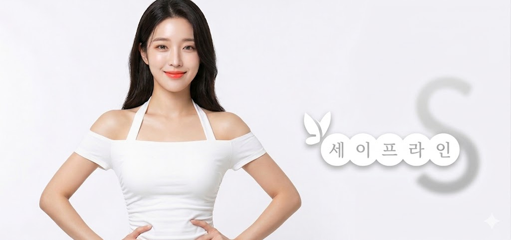

대용량 흡입으로 여리한 팔 라인과 뒤태를 한번에
부위별 팔 등 .지방 흡입

팔뚝
불필요한 지방으로 두꺼워 보이는
팔뚝 라인을 정리해 슬림하고 길어보이는
실루엣을 완성합니다.

부유방
가슴과 겨드랑이 사이로 불룩 튀어나온
부유방을 자연스럽게 정돈해 상체 라인을
균형 있게 잡아줍니다.

겨드랑이
겨드랑이 앞.뒤 라인의 불균형한
지방을 정리해 팔과 상체가 연결되는
라인을 매끄럽게 교정합니다.

브라라인
브라 착용 시 접히거나 튀어나오는
부분을다듬어 뒤쪽 라인이 깔끔하고
단정하게떨어지도록 정리합니다.

등
접히는 볼륨과 울퉁한 등 라인을 정돈해
부드럽고 곧은 실루엣을 되찾아줍니다.


지방성형
20,000 +
지방흡입케수술
3,300 +
두상질러
1,600 +
지방성형만 2만여건 이상의 시술을 집도하며
끊임없이 연구하고 노하우를 발전시켜
최상의 결과를 보여 드립니다.
박준성 대표원장
BEFORE&AFTER


BEFORE&AFTER


BEFORE&AFTER


FAQ
지방흡입
이런게 궁금해요!
Q
지방흡입 후 일상생활은 언제부터 가능한가요?
Q
지방흡입 시 흉터는 어느 정도 남나요?
Q
지방흡입은 체중 감량과 같은 효과인가요?
광고보다 정직한 결과로 신뢰받는
‘지방흡입 특화 병원’
‘지방흡입 특화 병원’
처음부터 끝까지 흐트러짐 없는 라인을 만드는데 집중합니다.

카톡ID safeline
네이버 톡톡